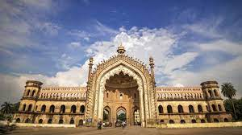
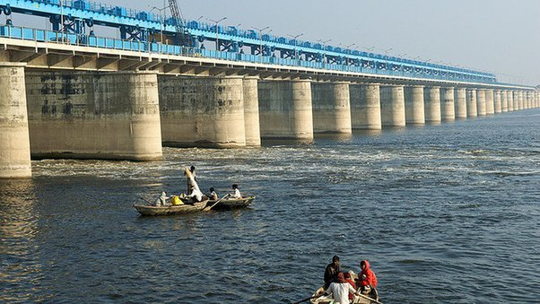

Azamgarh
Azamgarh is a city in the Indian state of Uttar Pradesh. It is the headquarters of Azamgarh division,
which consists of Ballia, Mau and Azamgarh districts. Azamgarh is situated on the bank of Tamsa River.
It is located 268 km east of the state capital Lucknow and 809 km from national capital.
The district is named after its headquarters town, Azamgarh, which was founded in 1665 by Azam, son of Vikramajit.
Vikramajit a descendant of Gautam Rajputs of Mehnagar in pargana Nizamabad, like some of his predecessors, had embraced the faith of Islam.
He had a Muhammadan wife who bore him two sons Azam and Azmat. While Azam gave his name to the town of Azamgarh, and the fort, Azmat constructed the fort and settled the bazar of Azmatgarh in pargana Sagri.
Read more

Lucknow
Lucknow has always been known as a multicultural city that flourished as a North Indian cultural and artistic hub, and the seat of power of Nawabs in the 18th and 19th centuries.
It continues to be an important centre of governance, administration, education, commerce, aerospace, finance, pharmaceuticals, technology, design, culture, tourism, music and poetry.
The city stands at an elevation of approximately 123 metres (404 ft) above sea level. Lucknow district covers an area of 2,528 square kilometres (976 sq mi).
Bounded on the east by Barabanki, on the west by Unnao, on the south by Raebareli and in the north by Sitapur and Hardoi, Lucknow sits on the northwestern shore of the Gomti River. Hindi is the main language of the city and Urdu is also widely spoken. Lucknow is the centre of Shia Islam in India with the highest Shia Muslim population in India.
Read more

Kanpur
Kanpur, formerly anglicized as Cawnpore
, is a large industrial city located in the central-western part of the state of Uttar Pradesh, India. Founded in 1207, Kanpur became one of the most important commercial and military stations of British India. Kanpur is also the financial capital of Uttar Pradesh.
Nestled on the banks of Ganges River, Kanpur has been the major financial and industrial centre of North India and also the ninth-largest urban economy in India.
Today it is famous for its colonial architecture, gardens, parks and fine quality leather, plastic and textile products which are exported mainly to the West.
Read more